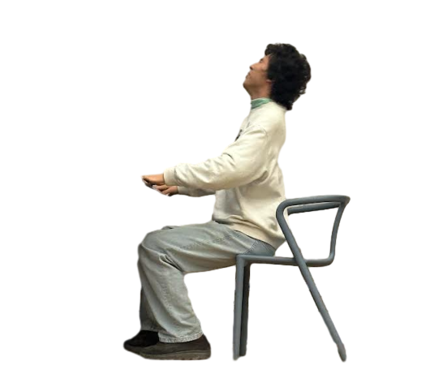
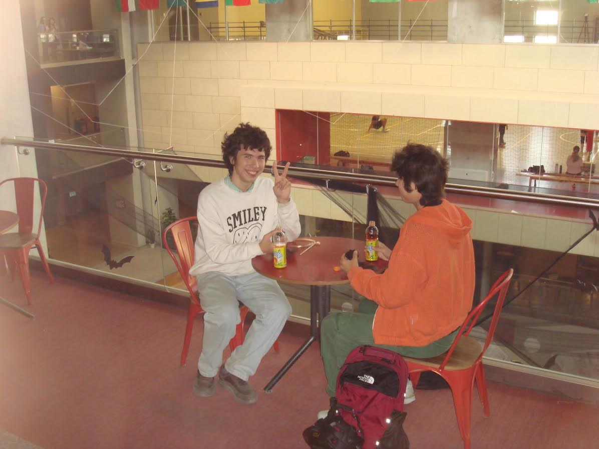
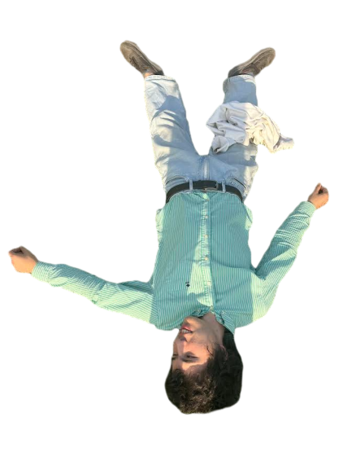
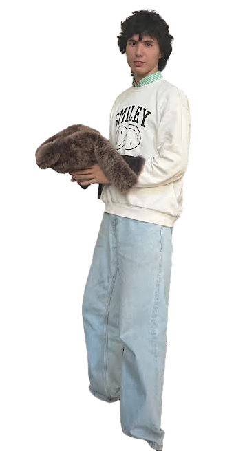

Турнир
Поколение победителей 2026
Саша выступал в команде «Саша и Артур».
Биография
Занимается дебатами, выступает на турнирах, состоит в клубе ДК TSI AUCA. Из всей еды предпочитает бутерброды.
Читать дальшеДебаты
Саша занимается дебатами. Это его главное увлечение: турниры, команды, споры и победы (о них — в следующем разделе).
Он состоит в клубе ДК TSI AUCA. А когда споры заканчиваются, его ждёт любимая еда: бутерброды.
ТурнирыТурниры и команды
Турниры, команды и друзья, без которых ничего бы не получилось.
Мы же не будем ебать муравьев?

Фото



Любимая еда
Дебаты, турниры, друзья — всё это хорошо. Но из еды Саша выбирает бутерброды.
НаверхЭпштейн
В поисках бутерброда.
Турниры / друзья
Турнир
Саша выступал в команде «Саша и Артур».
Турнир
Новая команда, новое название.
Друзья
Друг и сообщник Саши. Как Тайк Майсон.
О сайте